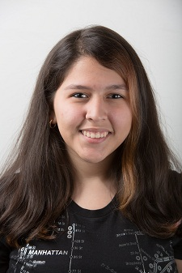
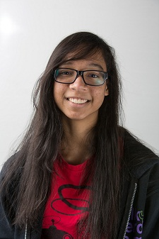
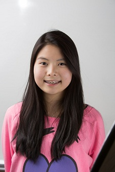
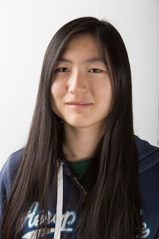
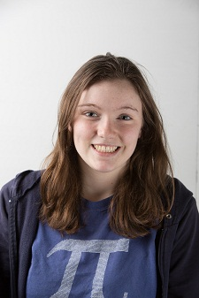

Electronics
The Electronics department is responsible for the wiring and electrical components of the robot. The team members in the Electronics have to put their heads together to figure out the correct amounts of electronic connections needed to make the robot work. On top of this, members of electronics are responsible for building a test robot, in order to make sure everything is functioning properly before the construction of the actual robot. The Electronics members do a great job of wiring the robot every year.
Members

|
Ivy is a senior on the electronics department. |
|  |
Angelika is a junior who is part of the electronics department in the FeMaidens. This is her second year on the team and she absolutely loves wiring and helping build the robot. In her free time, Angelika likes going to concerts and sleeping. She anticipates amazing things to come during this year's competition! |
|
Mahzabin is a member of the Electronics department of the FeMaidens. She loves being a part of the team and working with everybody. Her hobbies include listening to music, art, and watching movies. |
|
|  |
Ashley has been a member of the Electronics department for the past two years. She has been a member since freshman year and was initially part of the Construction department. She has been interested in FIRST robotics since elementary school. FIRST continues to inspire her and she hopes to pursue a career in engineering after high school. |
|  |
This is Breonna's third year on the team. She has always been interested in robots and how they work, so being a part of the team, especially the Electronics department, has taught her a great deal about wiring and the different parts of the robot. In her free time, she likes to read, listen to indie music and hang out with her friends. |
|  |
Cindy has been on the team for two years. She finds robotics really fun. Its a great place to make friends. She wants to learn all the aspect of building a robot. |
|  |
Charlotte is a freshman on the team in the electronics department. She joined the team because she thinks robotics is really interesting and likes trying to figure out how to wire and design the robot. Outside of school, she likes to read, watch movies, and hang out with her friends. |
|
This is Eliana's first year on a robotics team. She loves animals and hopes to become a great pediatric surgeon one day. She loves robotics and she thinks it's really fun as she has learned a lot in electronics this year. |